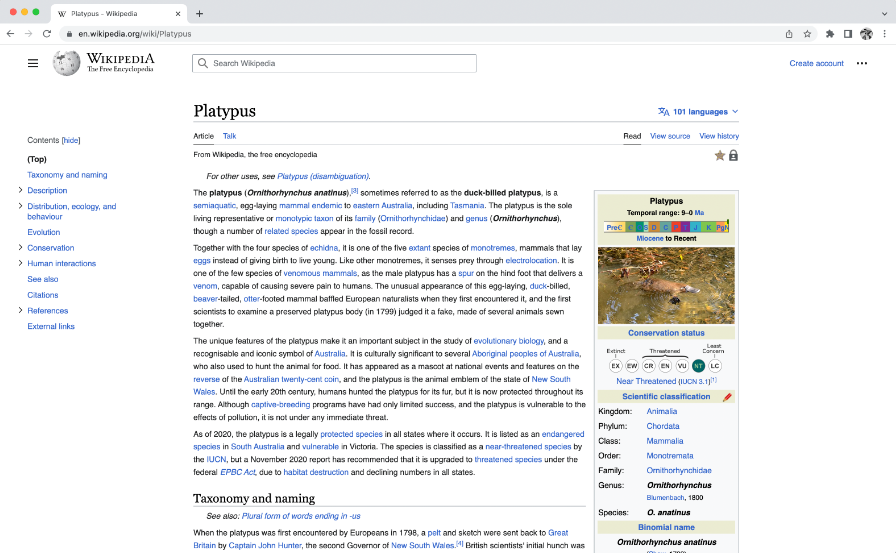
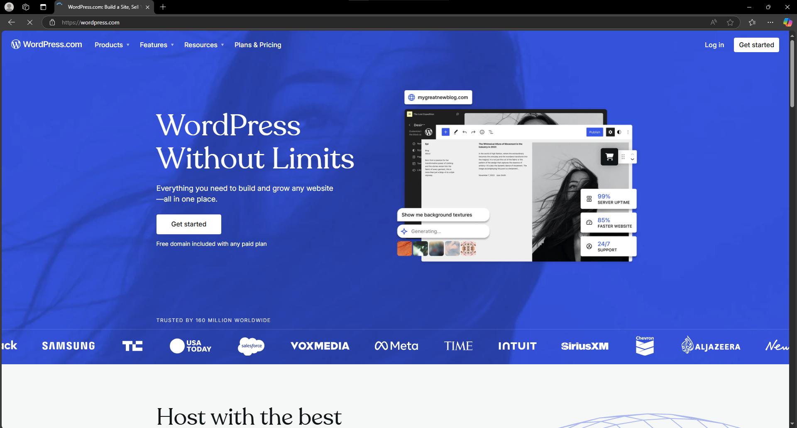
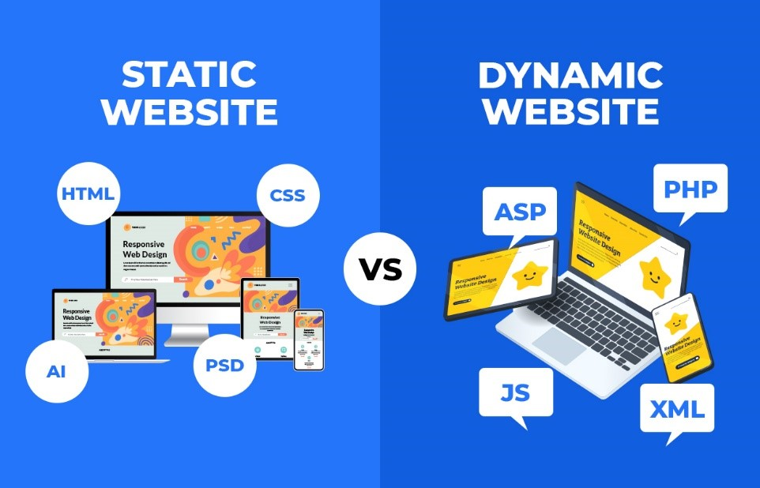

เว็บไซต์ คือหน้าเว็บเพจหลายหน้า ซึ่งเชื่อมโยงกันผ่านทางไฮเปอร์ลิงก์
ส่วนใหญ่จัดทำขึ้นเพื่อนำเสนอข้อมูลผ่านคอมพิวเตอร์ โดยถูกจัดเก็บไว้ในเวิลด์ไวด์เว็บ
หน้าแรกของเว็บไซต์ที่เก็บไว้ที่ชื่อหลักจะเรียกว่า โฮมเพจ เว็บไซต์โดยทั่วไปจะให้บริการต่อผู้ใช้ฟรี
แต่ในขณะเดียวกันบางเว็บไซต์จำเป็นต้องมีการสมัครสมาชิกและเสียค่าบริการเพื่อที่จะดูข้อมูล ในเว็บไซต์นั้น
ซึ่งได้แก่ข้อมูลทางวิชาการ ข้อมูลตลาดหลักทรัพย์ หรือข้อมูลสื่อต่าง ๆ ผู้ทำเว็บไซต์มีหลากหลายระดับ
ตั้งแต่สร้างเว็บไซต์ส่วนตัว จนถึงระดับเว็บไซต์สำหรับธุรกิจหรือองค์กรต่าง ๆ
การเรียกดูเว็บไซต์โดยทั่วไปนิยมเรียกดูผ่านซอฟต์แวร์ในลักษณะของเว็บเบราว์เซอร์
เว็บเพจ หรือหน้าเว็บ คือเอกสารเว็บชนิดหนึ่งเหมาะสำหรับเวิลด์ไวด์เว็บและเว็บเบราว์เซอร์
เว็บเบราว์เซอร์จะแสดงเว็บเพจบนจอคอมพิวเตอร์หรืออุปกรณ์เคลื่อนที่ เว็บเพจก็คือสิ่งที่ปรากฏออกมา
แต่ศัพท์นี้ก็ยังหมายถึงแฟ้มคอมพิวเตอร์ที่มักจะเขียนเป็นเอชทีเอ็มแอลหรือภาษามาร์กอัปที่เทียบเคียงได้
ซึ่งมีลักษณะเด่นอันเป็นหลักก็คือ การจัดเตรียมข้อความหลายมิติที่จะนำไปสู่ เว็บเพจอื่น ผ่านทางลิงก์
เว็บเบราว์เซอร์จะประสานงานกับทรัพยากรเว็บที่อยู่โดยรอบเว็บเพจที่เขียน เช่น สไตล์ชีต สคริปต์ และรูปภาพ
เพื่อนำเสนอเว็บเพจนั้น
ส่วนประกอบของว็บเพจแบ่งออกเป็น 3 ส่วน ดังนี้
1. ส่วนหัว (Page Header) จะอยู่บริเวณบนสุดของหน้าเว็บเพจ เป็นส่วนที่แสดงชื่อเว็บไซต์ โลโก้
แบนเนอร์โฆษณาลิงก์สําหรับข้ามไปยังหน้าเว็บอื่น
2. ส่วนเนื้อหา (Page Body) จะอยู่บริเวณตอนกลางของหน้าเว็บเพจ
ซึ่งเป็นส่วนที่แสดงเนื้อหาภายใน
หน้าเว็บเพจนั้น โดยประกอบด้วยข้อความ ข้อมูล ภาพเคลื่อนไหว เป็นต้น
3. ส่วนท้าย (Page Footer) จะอยู่บริเวณด้านล่างสุดของหน้าเว็บเพจ
ส่วนมากใช้สําหรับลิงก์ข้อความ สั้น ๆ
เข้าใจง่าย หรือจะมีชื่อเจ้าของเว็บไซต์ อีเมลแอดเดรสของผู้ดูแลเว็บไซต์สําหรับติดต่อกับทางเว็บไซต์

หมายเหตุ. จาก
https://en.wikipedia.org/wiki/Web_page

หมายเหตุ. จาก
https://wordpress.com/
รูปแบบของเว็บไซต์แบ่งออกเป็น 2 รูปแบบ ดังนี
1. เว็บไซต์ Static คือเว็บไซต์ที่มีเนื้อหาคงที่ สร้างด้วย HTML, CSS และบางครั้ง JavaScript
โดยไม่มีการดึงข้อมูลจากเซิร์ฟเวอร์หรือฐานข้อมูล เนื้อหาแสดงผลเหมือนเดิมทุกครั้งที่เข้าชม
เหมาะสำหรับเว็บไซต์ที่ไม่ต้องอัปเดตบ่อย เช่น พอร์ตโฟลิโอ ข้อดีคือโหลดเร็ว ค่าใช้จ่ายต่ำ และดูแลง่าย
แต่ไม่เหมาะสำหรับเว็บไซต์ที่มีเนื้อหาซับซ้อนหรือเปลี่ยนแปลงบ่อย
2. เว็บไซต์ Dynamic คือเว็บไซต์ที่สามารถเปลี่ยนแปลงเนื้อหาและโต้ตอบกับผู้ใช้แบบเรียลไทม์
โดยดึงข้อมูลจากเซิร์ฟเวอร์หรือฐานข้อมูล เหมาะสำหรับเว็บไซต์ที่มีฟีเจอร์ซับซ้อนและเนื้อหาอัปเดตบ่อย เช่น
เว็บข่าวหรืออีคอมเมิร์ซ

หมายเหตุ. จาก
https://www.accuwebhosting.com/blog/static-vs-dynamic-website/